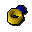
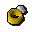
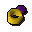
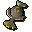

Cosmic rune
| Config name | cosmicrune |
| Item id | 564 |
| Value | 15 gp |
| Weight | 2g |
| Members | No |
| Tradeable | Yes |
| Stackable | Yes |
| Defined in | scripts/skill_magic/configs/runes.obj |
Cosmic rune
Used for enchant spells.
Show 1 ground spawn on the world map → Open in knowledge graph →
Used to make
| Skill | Level | XP | Ingredients | Tool | How | Where | Makes |
|---|---|---|---|---|---|---|---|
| Magic | 7 | 17.5 | use on item |  Ring of recoilcast enchant level1 on the item | |||
| Magic | 27 | 37.0 | use on item | cast enchant level2 on the item | |||
| Magic | 49 | 59.0 | use on item | cast enchant level3 on the item | |||
| Magic | 56 | 66.0 | use on object | obelisk water | members; cast charge water orb on the obelisk water | ||
| Magic | 57 | 67.0 |  Diamond ring, | use on item | cast enchant level4 on the item | ||
| Magic | 60 | 70.0 | use on object | obelisk earth | members; cast charge earth orb on the obelisk earth | ||
| Magic | 63 | 73.0 | use on object | obelisk fire | members; cast charge fire orb on the obelisk fire | ||
| Magic | 66 | 76.0 | use on object | obelisk air | members; cast charge air orb on the obelisk air | ||
| Magic | 68 | 78.0 | use on item |  Ring of wealthmembers; cast enchant level5 on the item |
Dropped by
| NPC | Level | Quantity | Rarity | Via | Notes |
|---|---|---|---|---|---|
| 48 | 3 | 9/128 (7.03%) | |||
| 14 | 5 | 1/16 (6.25%) | |||
| 29 | 5 | 1/16 (6.25%) | |||
| 49 | 5 | 1/16 (6.25%) | |||
| 79 | 5 | 1/16 (6.25%) | |||
| 120 | 5 | 1/16 (6.25%) | |||
| 159 | 5 | 1/16 (6.25%) | |||
| 57 | 2 | 5/128 (3.91%) | |||
| 64 | 2 | 5/128 (3.91%) | |||
| 57 | 2 | 5/128 (3.91%) | |||
| 42 | 2 | 1/64 (1.56%) | |||
| 28 | 2 | 1/64 (1.56%) | |||
| 48 | 3 | 1/64 (1.56%) | |||
| 24 | 2 | 1/128 (0.78%) | |||
| 22 | 2 | 1/128 (0.78%) | |||
| 45 | 2 | 1/128 (0.78%) | |||
| 49 | 4 | 1/128 (0.78%) | |||
| 28 | 2 | 1/128 (0.78%) | |||
| 42 | 2 | 1/128 (0.78%) | |||
| 20 | 2 | 1/128 (0.78%) | |||
| 7 | 2 | 1/128 (0.78%) | |||
| 33 | 7 | 1/128 (0.78%) | |||
| 33 | 7 | 1/128 (0.78%) | |||
| 10 | 2 | 1/128 (0.78%) | |||
| 26 | 2 | 1/128 (0.78%) | |||
| 65 | 25 | 1/128 (0.78%) | |||
| 28 | 2 | 1/128 (0.78%) | |||
| 28 | 2 | 1/128 (0.78%) |
Sold at
| Shop | Shopkeeper | Stock |
|---|---|---|
| Lundail's Arena-side Rune Shop. | 20 |
Ground spawns
| Area | Coordinates | Level | Count | Map |
|---|---|---|---|---|
| Frozen Waste Plateau | 2947, 3898 | 0 | 3 | view |
Quests
Runecrafting
Cosmic altar: level 27, 80 xp per essence members. Crafts  Cosmic rune using
Cosmic rune using

Cosmic talisman.Altar at 3176, 9497 (view altar); mysterious ruins at 3173, 9501 (view ruins)
Referenced in scripts
scripts/_test/scripts/cheats/cheat_bank.rs2scripts/_test/scripts/cheats/cheat_magic.rs2scripts/areas/area_taverly/scripts/crystal_chest.rs2scripts/drop tables/scripts/black_knight.rs2scripts/drop tables/scripts/chaos_dwarf.rs2scripts/drop tables/scripts/dark_wizard.rs2scripts/drop tables/scripts/giant.rs2scripts/drop tables/scripts/hobgoblin.rs2scripts/drop tables/scripts/ice_giant.rs2scripts/drop tables/scripts/ice_warrior.rs2scripts/drop tables/scripts/kalphite_worker.rs2scripts/drop tables/scripts/moss_giant.rs2scripts/drop tables/scripts/necromancer.rs2scripts/drop tables/scripts/otherworldly_being.rs2scripts/drop tables/scripts/shadow_warrior.rs2scripts/drop tables/scripts/skeleton.rs2scripts/drop tables/scripts/thug.rs2scripts/drop tables/scripts/zombie.rs2scripts/levelup/scripts/levelup_unlocks_runecrafting.rs2scripts/macro events/scripts/prayer/macro_event_zombie.rs2scripts/minigames/game_trail/scripts/hard/zamorak_wizard.rs2scripts/quests/quest_druidspirit/scripts/ghast.rs2scripts/quests/quest_grail/scripts/black_knight_titan.rs2